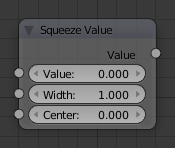

Squeeze Value Node¶

Squeeze Value node.
This node is used primarily in conjunction with the Camera Data node used. The camera data generate large output values, both in terms of the depth information as well as the extent in the width. With the squeeze Node high output values to an acceptable material for the node degree, i.e. to values between 0.0 - 1.0 scaled down.
Inputs¶
- Value
- Any numeric value. The value can be provided by another node or set manually.
- Width
- Determines the curve between sharp S-shaped at a width of 1 and stretched at a width of 0.1. Negative values reverse the course. The value can be provided by another node or set manually.
- Center
- The center of the output value range. This input value is replaced by the output value of 0.5. The value can be provided by another node or set manually.
Properties¶
This node has no properties.
Outputs¶
- Value
- A value in the range between 0 and 1.